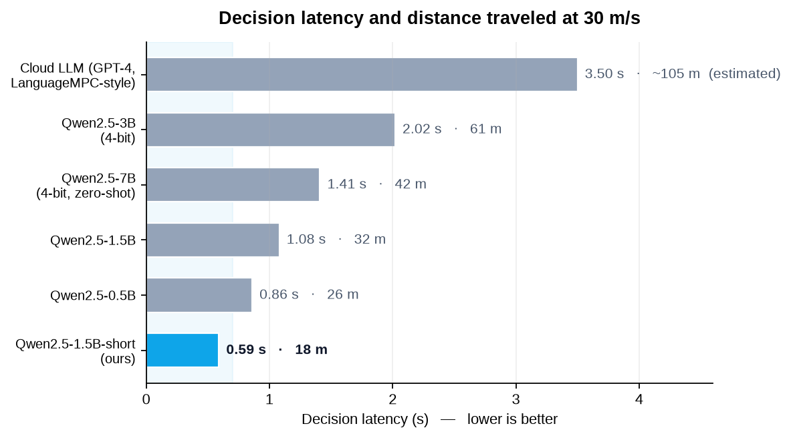
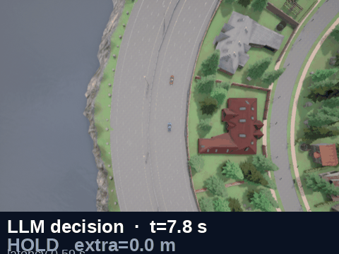
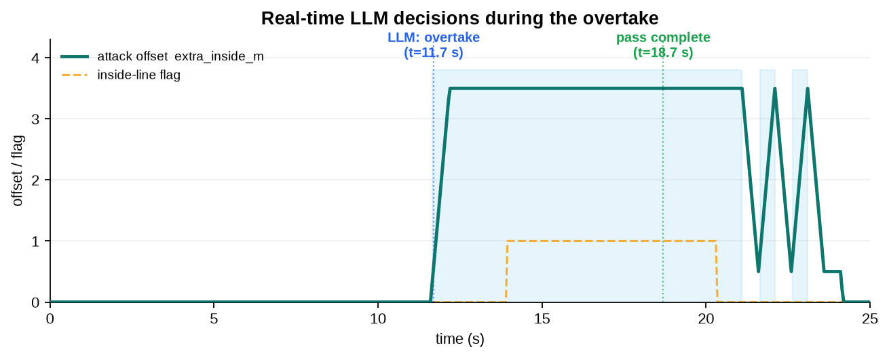
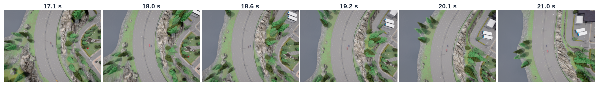
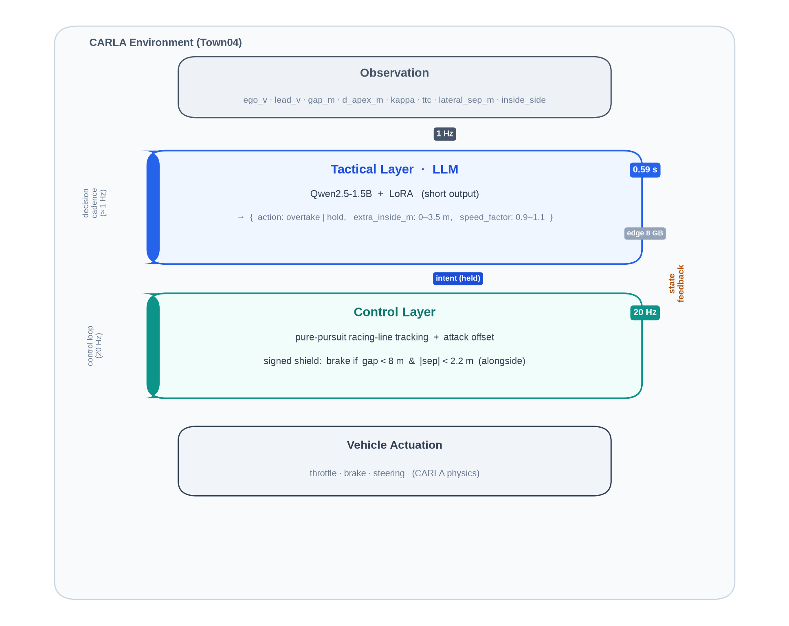
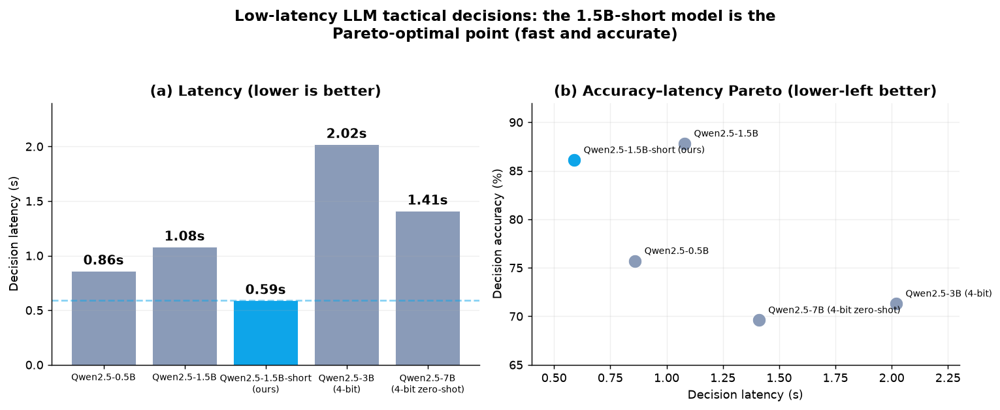

Abstract
The core idea in one paragraph.
Large language models (LLMs) have recently been used as decision-makers for autonomous driving, but existing approaches rely on cloud APIs whose multi-second inference latency precludes real-time, safety-critical use. We argue the LLM should act only as a low-frequency tactical layer — issuing coarse overtake/hold intents — while a classical 20 Hz controller handles tracking and safety. We fine-tune a Qwen2.5-1.5B model with LoRA and show a short-output variant reaches 0.59 s on a consumer 8 GB GPU — an order of magnitude faster than cloud baselines — while retaining 86.1% accuracy, the Pareto-optimal point among 0.5B–7B alternatives. In closed-loop CARLA experiments the system completes overtakes with 95–100% pass rate and median clearance ≥2.2 m across ten scenarios, generalizing zero-shot from training on only two corner geometries. We also report two honest negative results: multi-scenario fine-tuning on rule-expert data regresses (catastrophic forgetting), and a CBF-QP filter underperforms a simple geometric shield.
Latency Advantage
The core contribution: 0.59 s decisions vs. multi-second cloud LLMs. At 30 m/s, a decision's delay is distance traveled before the car reacts.

Live Decision Process
Watch the LLM decide in real time. The HUD shows the model's actual JSON intent at each moment — hold then overtake — issued at 1 Hz with 0.59 s latency.



Demo
Closed-loop overtaking in CARLA Town04. LLM-driven (our model) vs. a rule-based stub baseline. Blue = ego, red = lead.
Architecture
Two-timescale decomposition: the LLM owns intent at 1 Hz; a rule-based controller owns safety at 20 Hz.

Latency–Accuracy Pareto
The 1.5B-short model is the Pareto-optimal point: fastest and more accurate than 3B/7B, because bigger models must be quantized to 4-bit to fit 8 GB.

Key Results
Zero-shot generalization across ten corner–lead scenarios (10 seeds each).
| Corner | Lead | Pass | Collision | minSep med. |
|---|---|---|---|---|
| R=208 | constant | 100% | 0 | 2.77 m |
| R=208 | variable | 100% | 0 | 3.30 m |
| R=208 | defensive | 90% | 0 | 2.33 m |
| R=151 | constant | 100% | 0 | 3.28 m |
| R=151 | variable | 100% | 0 | 2.79 m |
| R=151 | defensive | 100% | 0 | 2.37 m |
| R=188 | constant | 100% | 0 | 2.84 m |
| R=188 | defensive | 90% | 0 | 2.28 m |
| R=83 | constant | 80% | 2 | 2.74 m |
| R=138 | variable | 100% | 0 | 3.26 m |
Aggregate: 96 / 100 passes (96%) · 2 collisions (2%)
Contributions
Four contributions, including two honest negative results.
Latency–accuracy Pareto
A short-output 1.5B variant is optimal: 0.59 s and 86.1%, beating 3B (2.02 s) and 7B (1.41 s) on both axes.
Zero-shot generalization
Trained on two corner geometries, the system generalizes to ten scenarios with 96% pass rate and median clearance ≥2.2 m.
Quantified staleness
0.5 s of decision delay is tolerated; 0.8 s degrades safety — the quantitative case for the latency reduction.
Honest findings
Multi-scenario behavior cloning regresses (catastrophic forgetting); a CBF-QP filter underperforms a geometric shield.
Citation
@misc{llm-overtaking-2026,
title = {Low-Latency Edge LLM Tactical Decision-Making
for High-Speed Autonomous Overtaking},
author = {Author Name},
year = {2026},
note = {Under review}
}